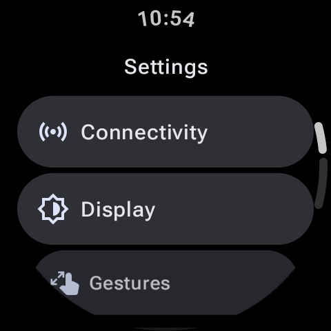
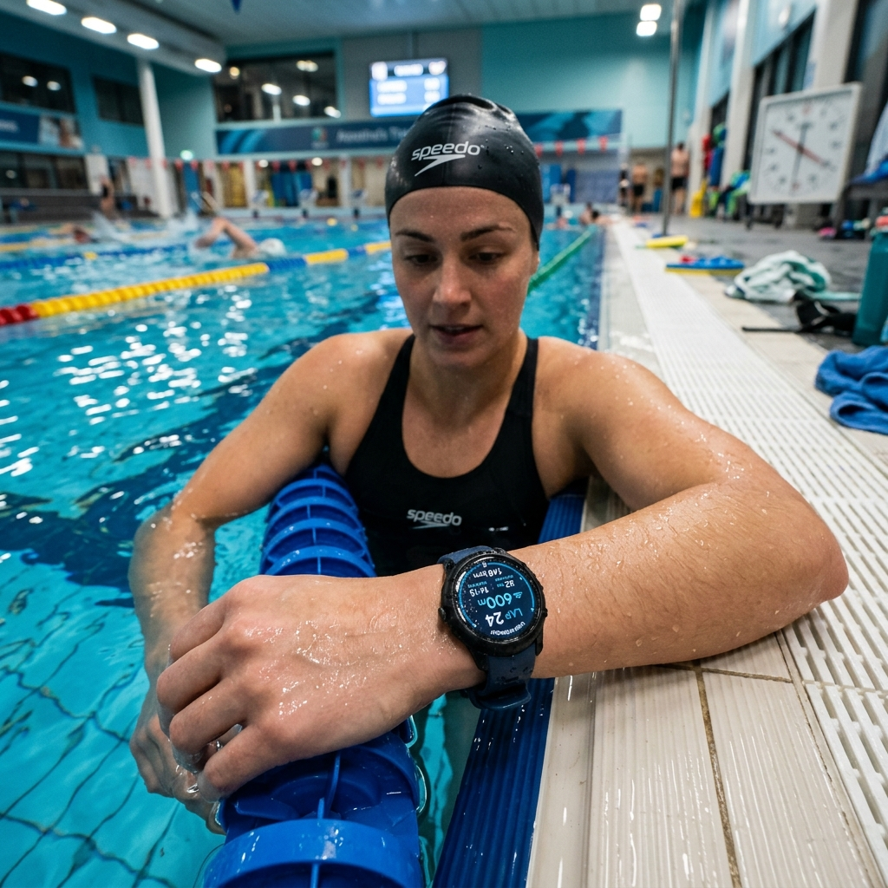

Yüzme, en etkili tüm vücut antrenmanlarından biridir. Kardiyovasküler sisteminizi zorlar, kas gücünü artırır ve kalori yakmanızı sağlar; üstelik eklemleriniz üzerinde inanılmaz derecede düşük bir etkiye sahiptir. Samsung Galaxy Watch veya Google Pixel Watch gibi modern bir Wear OS akıllı saate sahipseniz, doğrudan bileğinize takılı güçlü bir yüzme bilgisayarınız var demektir. Gelişmiş sensörler ve su geçirmez tasarımlar sayesinde bu cihazlar sudaki turlarınızı, kulaçlarınızı, mesafelerinizi ve verimlilik metriklerinizi takip edebilir.
Ancak, pahalı bir elektronik cihazı doğru şekilde nasıl yapılandıracağınızı bilmeden yüzme havuzuna sokmak göz korkutucu hissettirebilir. Bu kılavuzda, akıllı saatlerin su direncini açıklayacak, Su Kilidi modunu nasıl kullanacağınızı gösterecek ve Wear OS araçlarını kullanarak yüzme antrenmanlarınızı nasıl analiz edeceğinizi anlatacağız.

Akıllı Saatlerin Su Direncini Anlamak

Havuz kenarına gitmeden önce saatinizin su direnci derecesini kontrol etmek hayati önem taşır. Çoğu modern Wear OS saat 5 ATM derecesine ve IP68 sertifikasına sahiptir. Pratik anlamda bu şu anlama gelir:
- 5 ATM: Saat, sakin suda 50 metre (164 fit) derinliğe eşdeğer basınca dayanacak şekilde tasarlanmıştır. Bu, onu havuzlarda veya sakin göllerde sığ su yüzüşleri için tamamen güvenli hale getirir.
- IP68: Saatin toz geçirmez olduğunu ve genellikle 1.5 metreye kadar derinlikte tatlı suda 30 dakika boyunca sürekli kalabileceğini gösterir.
Bu derecelendirmelerin tatlı veya klorlu havuz suyu için geçerli olduğunu unutmayın. Denizde (tuzlu su) yüzüyorsanız, tuz kristallerinin şarj bağlantı noktalarını ve hoparlör ızgaralarını aşındırmasını önlemek için yüzüşünüzün hemen ardından saatinizi musluk suyuyla iyice durulamalısınız.
Su Kilidi Modunu Etkinleştirmek: Neden Hayati Önem Taşır?
Kapasitif bir dokunmatik ekranı suya soktuğunuzda, sıvı adeta parmak dokunuşu gibi davranarak yanlışlıkla ekran kaydırmalarını tetikler, rastgele uygulamaları başlatır veya antrenmanınızı duraklatır. Bunu önlemek için Wear OS, Su Kilidi Modu adı verilen yerleşik bir güvenlik aracı içerir.
Su Kilidi üç önemli işlevi yerine getirir:
- Dokunmatik ekran girişlerini tamamen devre dışı bırakır, böylece su damlacıkları kazara menü dokunuşlarını tetikleyemez.
- Havuzda ekranın sürekli açılıp pil tüketmesini önlemek için "Uyandırmak için Kaldır" hareketini durdurur.
- Devre dışı bırakıldığında, akustik odadaki sıkışmış su damlacıklarını fiziksel olarak titreştirmek ve dışarı atmak için hoparlörden bir dizi düşük frekanslı ses dalgası çalar.
Su Kilidi Nasıl Açılır?
Hızlı Ayarlar panelini açmak için ana ekranınızda aşağı kaydırın. **Su damlacıkları** şeklinde görünen simgeye dokunun. Ekran anında kilitlenecek ve küçük bir su damlası göstergesi belirecektir. Alternatif olarak, Samsung Health veya Fitbit üzerinde bir yüzme antrenmanı başlatmak, Su Kilidini otomatik olarak etkinleştirir.
Yüzüşü Takip Etmek: Turlar, Havuz Uzunlukları ve SWOLF
GPS sinyalleri suya nüfuz edemediğinden, saatiniz yüzüşünüzü takip etmek için dahili atalet sensörlerine (ivmeölçer ve jiroskop) güvenir. Bir yüzme antrenmanı başlattığınızda, saatiniz sizden havuz uzunluğunu ister (örneğin 25 metre, 50 metre veya 25 yarda). Bu ölçümü kullanan saat, geri döndüğünüz veya duvardan ittiğiniz anı algılayarak tamamlanan bir tur kaydeder.
Ayrıca gelişmiş algoritmalar, SWOLF skorunuzu hesaplamak için bilek hareketlerinizi analiz eder. SWOLF (yüzme ve golfün birleşimi), yüzme verimliliğinin bir ölçüsüdür. Bir havuz uzunluğunu yüzmek için geçen sürenin (saniye cinsinden) o uzunluğu tamamlamak için gereken kulaç sayısına eklenmesiyle hesaplanır. Daha düşük bir SWOLF skoru, daha az kulaçla daha fazla kaydığınız anlamına gelerek daha iyi bir verimliliğe işaret eder.
Wear OS Yüzme Uygulamaları Karşılaştırması
Sahip olduğunuz saat markasına bağlı olarak farklı önceden yüklenmiş veya üçüncü taraf fitness uygulamalarına erişebilirsiniz. Önde gelen üç seçeneği karşılaştıralım:
| Uygulama Seçeneği | En İyi Kullanım | Takip Edilen Temel Metrikler | Çevrimdışı Takip |
|---|---|---|---|
| Samsung Health | Temiz ve yerleşik bir çözüm arayan Galaxy Watch kullanıcıları. | Turlar, kulaç türü (serbest, kurbağalama), kalp atış hızı, SWOLF. | Evet (verileri yerel olarak otomatik kaydeder). |
| Fitbit | Basit ve entegre istatistikler isteyen Pixel Watch kullanıcıları. | Yüzüş süresi, mesafe, aktif bölge dakikaları, kalori. | Evet. |
| Swim.com | Gelişmiş analizler isteyen özel yüzücüler. | Tempo aralıkları, kulaç sayısı, ayrıntılı SWOLF grafikleri, özel egzersizler. | Evet (bağlantı kurulduğunda senkronize olur). |
Suyu Boşaltma ve Su Kilidini Kapatma
Yüzme seansınız tamamlandığında, fiziksel güç/ana ekran düğmesini iki saniye basılı tutun (bazı cihazlarda döner tacı çevirmeniz veya başka bir düğmeye basmanız gerekebilir). Saat size Su Kilidinin kapatıldığını bildirecektir. Elinizi hoparlörden uzak tutun; bir dizi bip sesi duyacaksınız ve yan hoparlör menfezlerinden küçük su damlacıklarının dışarı fışkırdığını görebilirsiniz. Saati kuru bir havluyla silin; artık günlük kullanıma hazırdır!
İster triatlon için antrenman yapıyor olun ister sadece kardiyovasküler sağlık için tur atıyor olun, Wear OS akıllı saatiniz mükemmel bir arkadaştır. Havuz uzunluğunuzu yapılandırın, Su Kilidini açın ve bir sonraki seansınıza güvenle dalın.